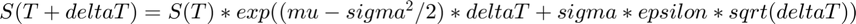
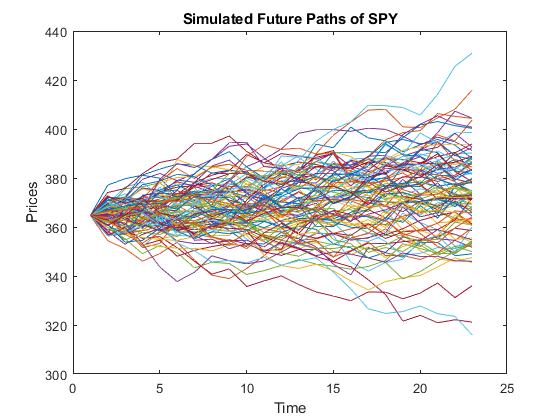
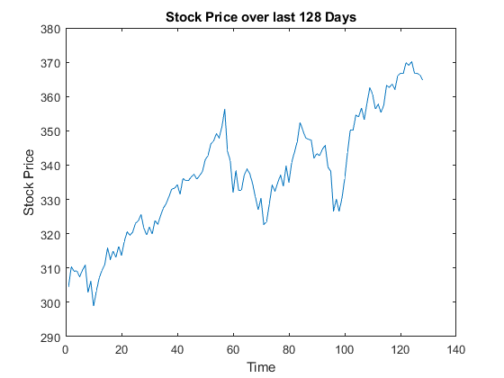
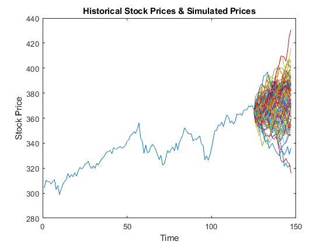
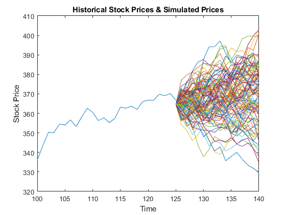
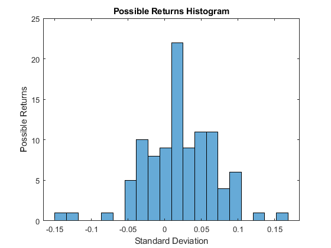
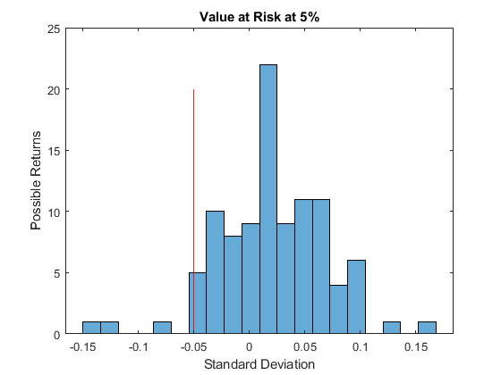

Calculating future prices of a stock based on the geometric brownian motion model
Contents
Read data
Set up the Import Options and import the data
opts = delimitedTextImportOptions("NumVariables", 7); % Specify range and delimiter opts.DataLines = [2, Inf]; opts.Delimiter = ","; % Specify column names and types opts.VariableNames = ["Date", "Var2", "Var3", "Var4", "Var5", "AdjClose", "Var7"]; opts.SelectedVariableNames = ["Date", "AdjClose"]; opts.VariableTypes = ["datetime", "string", "string", "string", "string", "double", "string"]; % Specify file level properties opts.ExtraColumnsRule = "ignore"; opts.EmptyLineRule = "read"; % Specify variable properties opts = setvaropts(opts, ["Var2", "Var3", "Var4", "Var5", "Var7"], "WhitespaceRule", "preserve"); opts = setvaropts(opts, ["Var2", "Var3", "Var4", "Var5", "Var7"], "EmptyFieldRule", "auto"); opts = setvaropts(opts, "Date", "InputFormat", "yyyy-MM-dd"); % Import the data SPY = readtable("C:\Users\kushk\OneDrive\Documents\FinancialEngineering\SPY.csv", opts);
Clear temporary variables
clear opts
Calculate Returns
Using GBM formula, we can predict multiple paths of the future stock prices of SPY. The formula for GBM is
 ;
head(SPY);
data = SPY(:,2);
data = data{:,:}; %Converting table to array
logPrices = log(data);
% Calculate SPY returns
returns = diff(logPrices);
Calculating factors of GBM
Calculate the descriptive statistics
% Compute mu mu = mean(returns); % compute sigma sigma = std(returns); % Assign deltaT = 1 deltaT = 1;
Calculate the future prices
Now create a vector of normally distributed numbers for epsilon. Simulating 100 future paths of stock price for SPY.
epsilon = randn(22,100);
Create factors for GBM
factors = exp((mu-sigma^2/2)*deltaT + sigma*epsilon*sqrt(deltaT));
To predict the future values of the stock price, first we need to extract the price of SPY on the last trading day and store the results.
S0 = data(end,1);
Create a row vector of size 1 by 100 such that each element of the vector has the value equal to the last recorded stock price S0. Note:If you change epsilon to 200, you need to change this vector too.
lastPriceVector = ones(1,100)*S0;
Now concatenate lastPriceVector and factors
factors2 = [lastPriceVector;factors];
Functions like cumprod are applied to each column of the input matrix Use the function cumprod with factors 2 as the input to compute the prices at future time instants
paths = cumprod(factors2);
Plot the paths
Plot paths to see the predicted prices of SPY
plot(paths) xlabel("Time") ylabel("Prices") title("Simulated Future Paths of SPY")
Combine stock price and predicted path together
plot(data) xlabel("Time") ylabel("Stock Price") title("Stock Price over last 128 Days") hold on
The future prices should have x-data that represents the future time points. Since the historical data contains 128 records, the future value should be plotted against the index(x-data)
plot(125:147,paths) xlabel("Time") ylabel("Stock Price") title("Historical Stock Prices & Simulated Prices") hold off
Zoom in the graph by changing the axis limit
xlim([100 140])
Extract all rows and columns from paths
finalPrices = paths(end,:);
Calculate possible returns
possibleReturns = log(finalPrices) - log(S0);
Plot a histogram of the possible returns with 20 bins.
histogram(possibleReturns,20) xlabel("Standard Deviation") ylabel("Possible Returns") title("Possible Returns Histogram")
Calculate the VaR
var5 = prctile(possibleReturns,5) hold on plot([var5 var5],[0 20], 'r') title("Value at Risk at 5%") hold off
var5 = -0.0503
Apply it to your own dataset and extract insights.